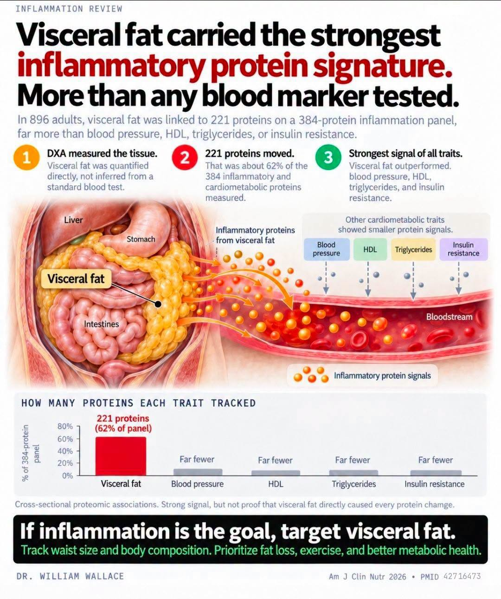

In the VITAL and COSMOS randomized trials at Harvard, visceral fat was more strongly linked to markers of inflammation and metabolic dysfunction than any other cardiometabolic parameter measured.
#visceralfatHD #inflammationHD #vitalHD #cosmosHD
Visceral fat may be doing far more than simply storing excess energy.
In an analysis of 896 adults from the VITAL and COSMOS studies, it carried the strongest inflammatory protein signature of any cardiometabolic trait examined.
Researchers measured body composition with DXA and profiled hundreds of circulating proteins linked to inflammation and cardiometabolic biology. Visceral fat was associated with 221 proteins, substantially more than blood pressure, HDL cholesterol, triglycerides, or insulin resistance.
That distinction matters because visceral fat is biologically active tissue. Fat stored around the abdominal organs releases fatty acids, hormones, cytokines, and other signals into the circulation. The more visceral fat someone carried, the broader the protein pattern associated with inflammation and metabolic dysfunction.
This was a cross-sectional proteomics study, so it cannot prove that visceral fat directly caused every protein change. It also does not mean that a single inflammatory blood marker can tell you how much visceral fat you have.
If reducing chronic inflammatory burden is the goal, visceral fat is a meaningful target. Waist circumference and body composition can provide useful context, and the interventions with the best evidence remain familiar ones: losing excess body fat when appropriate, regular aerobic and resistance exercise, better diet quality, adequate sleep, and limiting excess alcohol.
The paper reinforces an important point about inflammation: sometimes the most informative signal is not one blood test. It is the metabolically active tissue generating the signal in the first place.
Am J Clin Nutr. 2026. PMID: 42716473.
